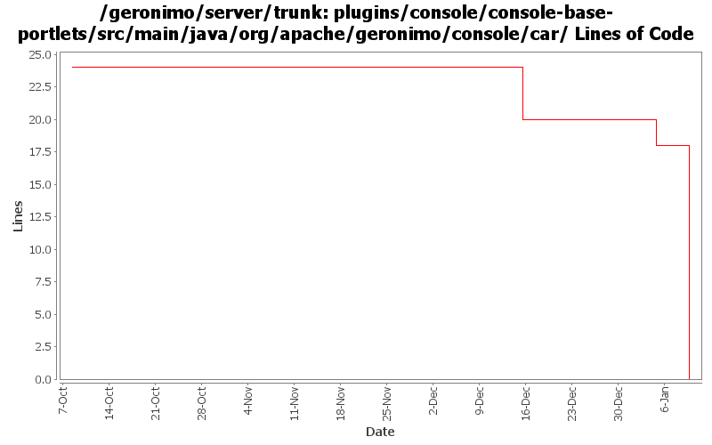

[root]/plugins/console/console-base-portlets/src/main/java/org/apache/geronimo/console/car

| Author | Changes | Lines of Code | Lines per Change |
|---|---|---|---|
| Totals | 36 (100.0%) | 24 (100.0%) | 0.6 |
| djencks | 28 (77.8%) | 24 (100.0%) | 0.8 |
| pmcmahan | 6 (16.7%) | 0 (0.0%) | 0.0 |
| gawor | 2 (5.6%) | 0 (0.0%) | 0.0 |
GERONIMO-3732 step 3 Move plugin and deployment pages into a console plugin
0 lines of code changed in 10 files:
GERONIMO-3732 steps 1, 2. Move plugin management and some jsr88 base code into a new module
15 lines of code changed in 10 files:
GERONIMO-3607 Large cleanup of code for extracting assemblies from running servers. Should greatly improve dealing with snapshots in local maven repos. Also changes meaning of plugin dependency start flag to override plugin load flag.
6 lines of code changed in 3 files:
GERONIMO-3607 Add 'assemble a server' support to geronimo and use it from car-maven-plugin and gshell. Not yet available in the console. Better repository support would be desirable
0 lines of code changed in 4 files:
GERONIMO-3579 Configure which config.xml and properties files info from the plugin xml goes into
3 lines of code changed in 1 file:
remove whitespace from url and encode spaces. fixes GERONIMO-3478
0 lines of code changed in 2 files:
GERONIMO-3496 reenable prerequisite check for plugin installation, but make the check optional via
a separate method.
0 lines of code changed in 4 files:
GERONIMO-3509 copy the new admin console and its plugins into the server project so they
can be built and released together.
also, merge recent improvements made to the old admin console into the new console:
revs 581420 580352 576651 574637 573719 573616
0 lines of code changed in 2 files: